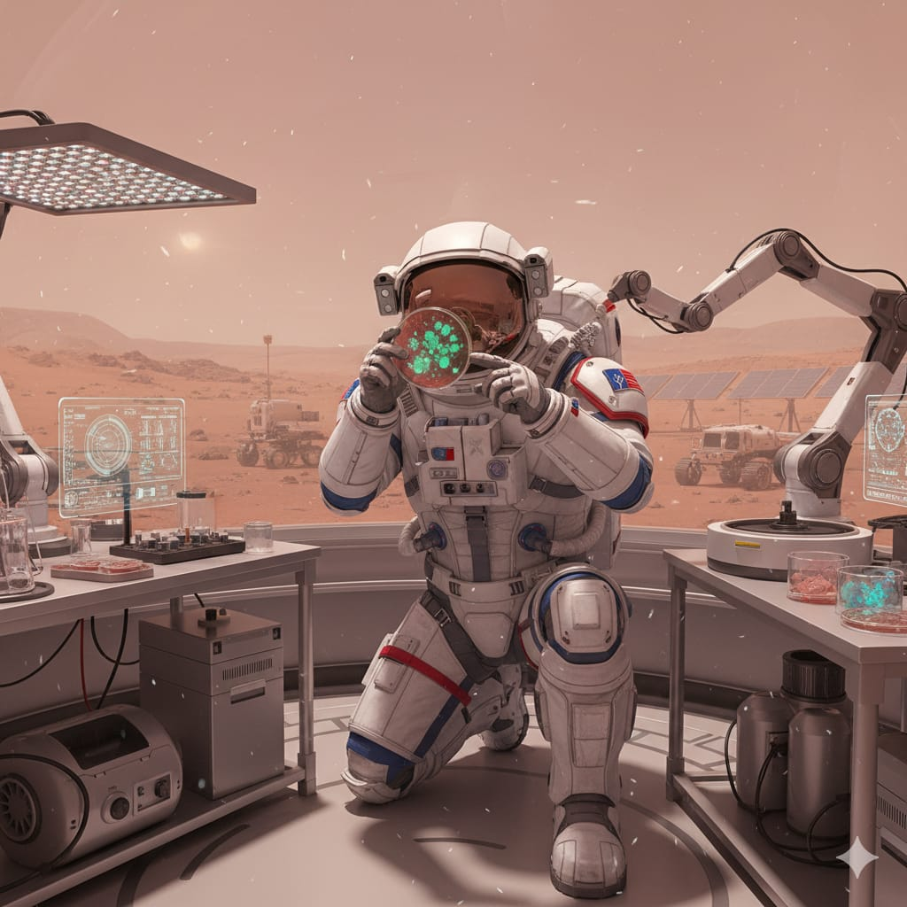
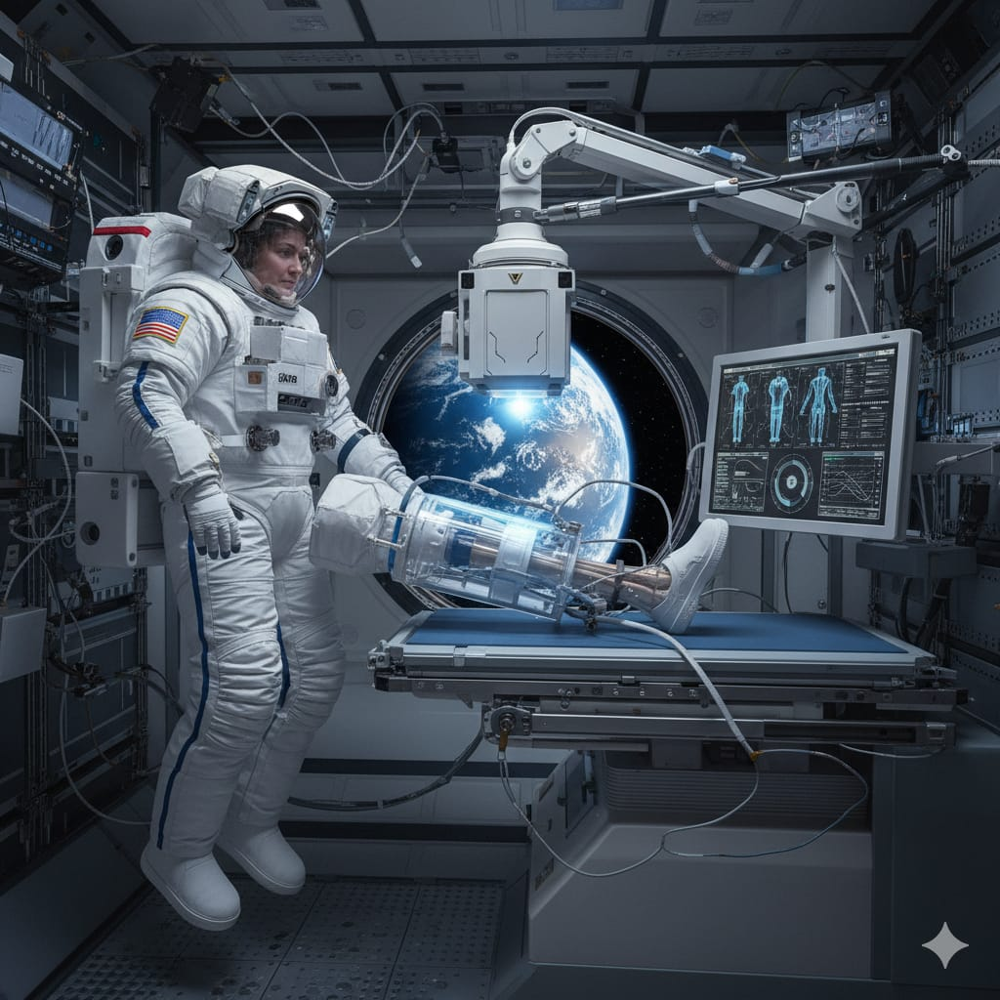

🧩 Active & Historical Missions

Mars MicroBioLab (2024)
Focus: Microbial mutation & nutrient cycles in Martian analog soil.
Lunar RadLab
Focus: Radiation-induced immune modulation under lunar dust exposure.

ISS BoneCell Study
Focus: Long-term microgravity effects on osteoblast cell activity.
📈 Key Bioscience Metrics
Bone Density Changes Across Missions
Radiation Exposure vs Immune Response
🔬 AI Research Suggestions
Enter a topic or select a mission to discover underexplored research areas.